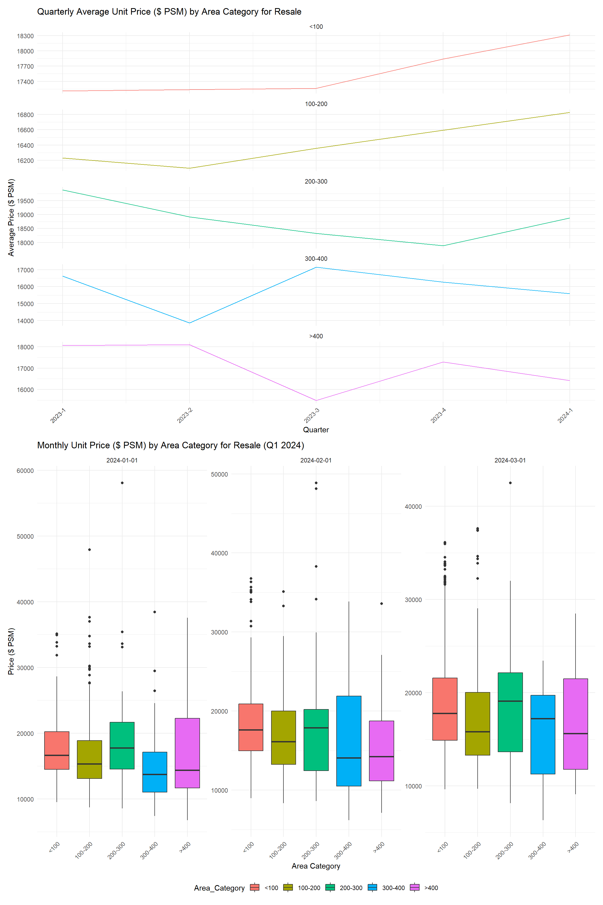
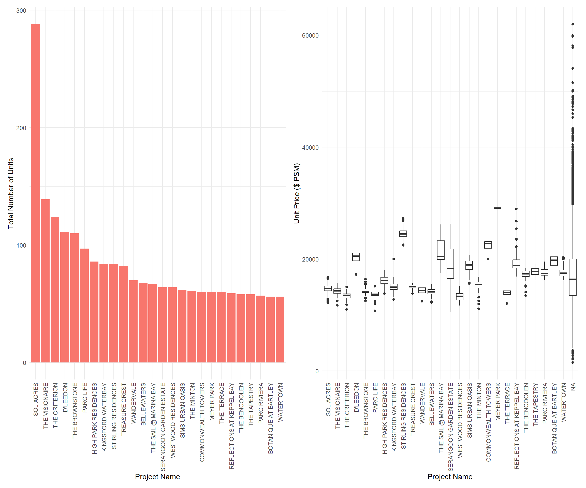

pacman::p_load(tidyverse, lubridate, patchwork, zoo)Take-home Exercise 1
Take-home Exercise 1 :Creating data visualisation beyond default
1.Overview
1.1 Background
There are two major residential property market in Singapore, namely public and private housing. Public housing aims to meet the basic need of the general public with monthly household income less than or equal to S$14,000. For families with monthly household income more than S$14,000, they need to turn to the private residential market.
1.2 The Data
To accomplish the task, transaction data of REALIS will be used. A complete set of the private residential property transaction data from 1st January 2023 to 31st March 2024 have been downloaded via SMU e-library database service.
1.3 The Task
Assuming the role of a graphical editor of a median company, we prepare minimum two and maximum three data visualisation to reveal the private residential market and sub-markets of Singapore for the 1st quarter of 2024.
2.Getting Start
2.1 Setting the Analytical Tools
tidyverse (i.e. readr, tidyr, dplyr, ggplot2) :for performing data science tasks such as importing, tidying, and wrangling data, as well as creating graphics based on The Grammar of Graphics;
lubridate: Simplifies the handling of dates and times in R by providing tools to parse, manipulate, and calculate with date-time objects more intuitively.
patchwork: An extension for ggplot2 that enables the easy assembly of multiple plots to produce a composite plot that can reveal complex insights into data.
zoo: Provides powerful methods for managing and manipulating ordered indexed data, particularly time series data, making it easier to handle a variety of data irregularities.
2.2 Variable Selection
| Category | Description |
|---|---|
| Project Name | the name of the property or title of the development project that is being sold |
| Sale Date | The specific date when the transaction was completed |
| Type of Sale | A new sale, resale, or auction, among other types.Here mainly analyze resale |
| Area (SQM) | The usable floor area of the property in square meters |
| Unit Price ($ PSM) | The price per square meter of the property |
3.ata processing
3.1 Importing Data
Each read_csv() function loads data from a CSV file into R, creating five separate data frames: data1, data2, data3, data4, and data5. 2.Data Consolidation:
bind_rows() from the dplyr package merges these five data frames into one large data frame called data. This function stacks the data frames vertically, allowing for an analysis across all data combined. 3.Data Inspection:
glimpse() provides a quick overview of the combined data frame, showing types of data and a preview of the first few entries in each column, helping to quickly assess the data’s structure and readiness for analysis.
data1 = read_csv("data/ResidentialTransaction20240308160536.csv")
data2 = read_csv("data/ResidentialTransaction20240308160736.csv")
data3 = read_csv("data/ResidentialTransaction20240308161009.csv")
data4 = read_csv("data/ResidentialTransaction20240308161109.csv")
data5 = read_csv("data/ResidentialTransaction20240414220633.csv")
data <- bind_rows(data1, data2, data3, data4, data5)
glimpse(data)Rows: 26,806
Columns: 21
$ `Project Name` <chr> "THE REEF AT KING'S DOCK", "URBAN TREASU…
$ `Transacted Price ($)` <dbl> 2317000, 1823500, 1421112, 1258112, 1280…
$ `Area (SQFT)` <dbl> 882.65, 882.65, 1076.40, 1033.34, 871.88…
$ `Unit Price ($ PSF)` <dbl> 2625, 2066, 1320, 1218, 1468, 1767, 1095…
$ `Sale Date` <chr> "01 Jan 2023", "02 Jan 2023", "02 Jan 20…
$ Address <chr> "12 HARBOURFRONT AVENUE #05-32", "205 JA…
$ `Type of Sale` <chr> "New Sale", "New Sale", "New Sale", "New…
$ `Type of Area` <chr> "Strata", "Strata", "Strata", "Strata", …
$ `Area (SQM)` <dbl> 82.0, 82.0, 100.0, 96.0, 81.0, 308.7, 42…
$ `Unit Price ($ PSM)` <dbl> 28256, 22238, 14211, 13105, 15802, 19015…
$ `Nett Price($)` <chr> "-", "-", "-", "-", "-", "-", "-", "-", …
$ `Property Type` <chr> "Condominium", "Condominium", "Executive…
$ `Number of Units` <dbl> 1, 1, 1, 1, 1, 1, 1, 1, 1, 1, 1, 1, 1, 1…
$ Tenure <chr> "99 yrs from 12/01/2021", "Freehold", "9…
$ `Completion Date` <chr> "Uncompleted", "Uncompleted", "Uncomplet…
$ `Purchaser Address Indicator` <chr> "HDB", "Private", "HDB", "HDB", "HDB", "…
$ `Postal Code` <chr> "097996", "419535", "269343", "269294", …
$ `Postal District` <chr> "04", "14", "27", "27", "28", "19", "10"…
$ `Postal Sector` <chr> "09", "41", "26", "26", "79", "54", "27"…
$ `Planning Region` <chr> "Central Region", "East Region", "North …
$ `Planning Area` <chr> "Bukit Merah", "Bedok", "Yishun", "Yishu…3.2 Data cleaning
Sale Date is converted to a date format using the dmy() function from the lubridate package, which interprets strings as dates in “day-month-year” format.
Area (SQM). is transformed into a numeric variable. First, any commas are removed with gsub(“,”, ““, Area (SQM).), then the result is coerced to numeric with as.numeric().
Unit Price ($ PSM). undergoes a similar process as Area (SQM).; however, it also removes the dollar sign ($) before removing commas and converting to numeric.
Any NA (missing) values in Area (SQM). are replaced with 0 using ifelse(is.na(Area (SQM).), 0, Area (SQM).).
A new variable Area_Category is created using the cut() function to categorize the Area (SQM). variable into predefined bins: <100, 100-200, 200-300, 300-400, >400.
The breaks argument specifies the boundaries for these bins, and labels provides the corresponding category labels.
include.lowest = TRUE ensures that values equal to the lowest break point (0) are included in the first category (<100).
data_cleaned <- data %>%
mutate(
`Sale Date` = dmy(`Sale Date`), # Ensuring we're using the exact column name from the dataset
`Area (SQM)` = as.numeric(gsub(",", "", `Area (SQM)`)), # Keeping the variable names as they are in the dataset
`Unit Price ($ PSM)` = as.numeric(gsub("\\$", "", gsub(",", "", `Unit Price ($ PSM)`))) # Properly referencing the variable
)
data_cleaned <- data_cleaned %>%
mutate(
`Area (SQM)` = ifelse(is.na(`Area (SQM)`), 0, `Area (SQM)`) # Dealing with NA values
)
data_cleaned <- data_cleaned %>%
mutate(
Area_Category = cut(
`Area (SQM)`,
breaks = c(0, 100, 200, 300, 400, Inf),
labels = c("<100", "100-200", "200-300", "300-400", ">400"),
include.lowest = TRUE
)
)4.Exploratory Data Analysis
The visualizations specifically highlight resale data within Singapore’s private residential market for the first quarter of 2024. This focus on resale properties is crucial as it offers a snapshot of the market’s secondary transactions, reflecting ongoing demand and providing a real-world gauge of property values after the initial purchase. Resale data represents an essential segment of the housing market, often characterized by immediate habitability and established neighborhoods, crucial factors for many homebuyers and investors in making informed decisions.
4.1 Analysis of Quarterly Housing Prices by Area Category
Sale Date:
The Sale Date variable is crucial in housing price analysis for monitoring temporal patterns. It allows analysts to track how prices change over time, revealing trends that may correspond to economic conditions, interest rates, or seasonal fluctuations. By examining the Sale Date, one can also discern if there are particular times of the year when the market peaks or dips, which can be invaluable for both buyers looking for the best deal and sellers aiming for the optimal listing period.
Area and Unit Price:
On the other hand, Area (SQM). and Unit Price ($ PSM). provide spatial and valuation metrics, respectively. The area of a property, often measured in square meters, directly influences its utility and potential for future modifications, affecting its market value. The unit price per square meter standardizes property values, making it possible to compare homes of different sizes and locations fairly. This metric is essential to understand what drives value in the housing market and to identify whether buyers are getting a reasonable price for the area they are purchasing in.
resale_data <- data_cleaned %>%
filter(`Type of Sale` == "Resale") %>%
mutate(Quarter = as.yearqtr(`Sale Date`))
avg_price_by_quarter_resale <- resale_data %>%
group_by(Area_Category, Quarter) %>%
summarise(Avg_Unit_Price_PSM = mean(`Unit Price ($ PSM)`, na.rm = TRUE), .groups = "drop")
p_line_resale <- avg_price_by_quarter_resale %>%
ggplot(aes(x = Quarter, y = Avg_Unit_Price_PSM, group = Area_Category, color = Area_Category)) +
geom_line() +
labs(title = "Quarterly Average Unit Price ($ PSM) by Area Category for Resale",
x = "Quarter",
y = "Average Price ($ PSM)") +
theme_minimal() +
theme(axis.text.x = element_text(angle = 45, hjust = 1),
legend.position = "none")
p_line_resale_stacked <- p_line_resale + facet_wrap(~Area_Category, ncol = 1, scales = "free_y")
data_q1_resale <- resale_data %>%
filter(Quarter == "2024 Q1") %>%
mutate(Month = floor_date(`Sale Date`, "month"))
p_box_resale <- ggplot(data_q1_resale, aes(x = Area_Category, y = `Unit Price ($ PSM)`, fill = Area_Category)) +
geom_boxplot() +
geom_jitter(width = 0.2, alpha = 0.001) + # Adjusting alpha for visibility
facet_wrap(~Month, scales = "free_y") +
labs(title = "Monthly Unit Price ($ PSM) by Area Category for Resale (Q1 2024)",
x = "Area Category",
y = "Price ($ PSM)") +
theme_minimal() +
theme(legend.position = "bottom",
axis.text.x = element_text(angle = 45, hjust = 1))
p_combined_resale <- p_line_resale_stacked / p_box_resaleprint(p_combined_resale)
In the resale housing market, the quarterly average unit price per square meter (PSM) exhibits contrasting trends: smaller properties (<200 SQM) are gaining value, while larger ones (≥300 SQM) show price declines, indicating a shift in consumer preferences toward more compact living spaces. The Q1 2024 box plots reveal a broad price range within each area category, especially in the largest homes, suggesting that factors like location and amenities significantly influence pricing.
4.2 Comparative Analysis of Transaction Volumes and Pricing Across Real Estate Projects
Project Name:
The variable Project.Name represents the specific housing development or project. Analyzing data by Project.Name allows for a detailed understanding of the popularity and demand for specific developments. This can highlight developers’ reputation, location desirability, and unique features of individual projects that may influence prices. Trends can emerge, such as certain developers commanding premium prices or projects in specific locations being more sought-after.
Total Units and Avg Unit Price PSM:
Total_Units and Avg_Unit_Price_PSM are key metrics for assessing supply and value. Total_Units sold provides insight into the scale of a project and its market absorption rate. High sales volumes can indicate high demand or effective pricing strategies, while low volumes may signal overpricing or less desirable attributes. Avg_Unit_Price_PSM (average unit price per square meter) offers a comparative value indicator that normalizes prices across different sizes and types of properties, reflecting the price point at which the market clears. Analyzing this alongside Total_Units can reveal if there’s a relationship between the number of units sold and the price points, potentially guiding future development and pricing strategies.
resale_data <- data_cleaned %>%
filter(`Type of Sale` == "Resale")
project_stats <- resale_data %>%
filter(`Project Name` != "N.A.") %>%
group_by(`Project Name`) %>%
summarise(
Total_Units = sum(`Number of Units`, na.rm = TRUE), # Sum up all units for each project
Avg_Unit_Price = mean(`Unit Price ($ PSM)`, na.rm = TRUE), # Calculate the average price per square meter
.groups = "drop" # Drop the grouping
)
top_projects <- project_stats %>%
top_n(25, Total_Units) %>%
arrange(desc(Total_Units))
project_order <- top_projects$`Project Name`
top_projects$`Project Name` <- factor(top_projects$`Project Name`, levels = project_order)
resale_data$`Project Name` <- factor(resale_data$`Project Name`, levels = project_order)
p_units <- ggplot(top_projects, aes(x = `Project Name`, y = Total_Units, fill = 'steelblue')) +
geom_bar(stat = "identity") +
labs(y = "Total Number of Units") +
theme_minimal() +
theme(
axis.text.x = element_text(angle = 90, hjust = 1, vjust = 0.5),
legend.position = "none"
)
p_price <- ggplot(resale_data, aes(x = `Project Name`, y = `Unit Price ($ PSM)`)) +
geom_boxplot() +
labs(y = "Unit Price ($ PSM)") +
theme_minimal() +
theme(
axis.text.x = element_text(angle = 90, hjust = 1, vjust = 0.5),
legend.position = "none"
)
p_combined <- p_units | p_pricep_combined
The bar chart depicts a significant lead in the total number of units sold by “Sol Acres,” suggesting a high demand or larger inventory. Other projects show a steady decrease in volume, indicating varied market preferences. The box plot showcases consistent unit price ranges within most projects, with notable premiums in “The Sail @ Marina Bay” and “Reflections at Keppel Bay,” likely due to their desirable locations or upscale amenities.
5.Conclusion
The data from the first quarter of 2024 shows that “Sol Acres” significantly leads in resale volumes, hinting at its market desirability, possibly due to a balance of affordability and attractive amenities. This project’s success may be a key indicator for those seeking value-for-money investments. In contrast, luxury segments like “The Sail @ Marina Bay” exhibit a wide price range, indicating a market for buyers with a taste for exclusivity and willingness to pay a premium for distinctive features.
For Consumers: Buyers should align their choices with their priorities: affordability may lead them to high-volume projects, while unique, high-quality features could draw them towards premium segments. When considering investment, a diversified approach that includes stable, high-volume properties and selective, high-value opportunities may offer balanced returns.